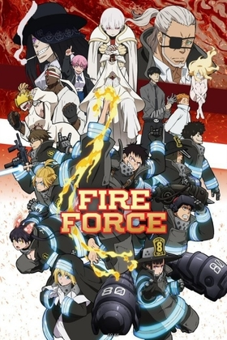

ANIME INFO

FIRE FORCE
Type:
Summer 2019 Anime
Plot Summary:
Year 198 of the Solar Era in Tokyo, special fire brigades are fighting against a phenomenon called spontaneous human combustion where humans beings are turned into living infernos called "Infernals". While the Infernals are first generation cases of spontaneous human combustion, later generations possess the ability to manipulate flames while retaining human form. Shinra Kusakabe, a youth who gained the nickname Devil's Footprints for his ability to ignite his feet at will, joins the Special Fire Force Company 8 which composes of other flames users as they work to extinguish any Infernals they encounter. As a faction that is creating Infernals appears, Shira begins to uncover the truth behind a mysterious fire that caused the death of his family twelve years ago.
Genre:
Action, Sci-Fi, Shounen
Released:
2019
Status:
Completed
Other Names:
Fire Force, 炎炎ノ消防隊